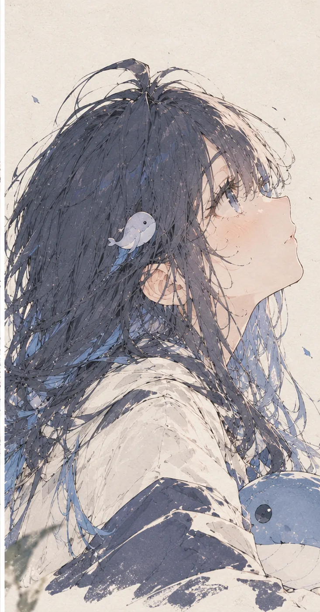
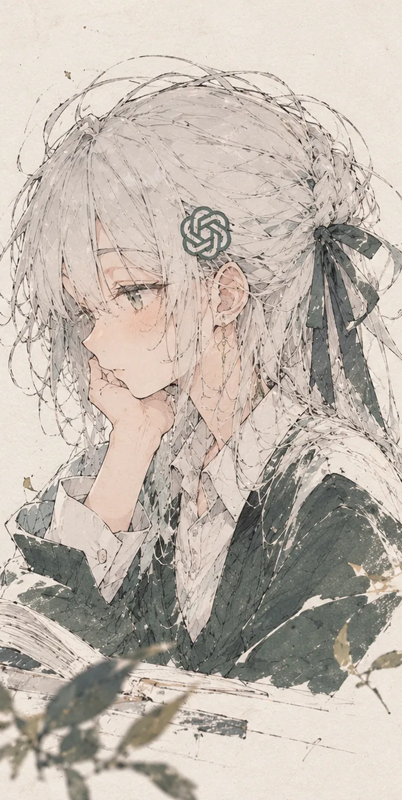

> hello, world/你好，世界
Liu Ling


三个 AI 替我值班。把鼠标放在她们身上，或者点一下。
验收记录
test report往周记录
提交记录
git log趋势
blocks / week已知问题
issues毛病不藏起来。每一个都配一条能执行的制度，改好了就关掉。
> hello, world/你好，世界


三个 AI 替我值班。把鼠标放在她们身上，或者点一下。
毛病不藏起来。每一个都配一条能执行的制度，改好了就关掉。